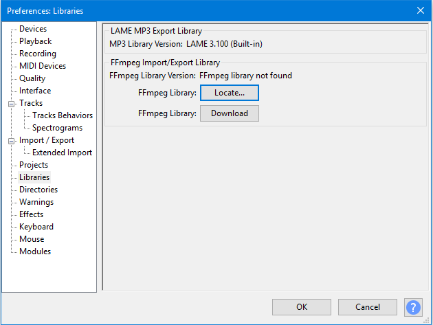

Installing FFmpeg for Windows
From Audacity Development Manual
The optional FFmpeg library allows Audacity to import and export a much larger range of audio formats including M4A (AAC), AC3, AMR (narrow band) and WMA and also to import audio from most video files.
- Because of software patents, Audacity cannot include the FFmpeg software or distribute it from its own websites. Instead, use the following instructions to download and install the free and recommended FFmpeg third-party library.
- Advanced usage: If you already have Audacity-compatible FFmpeg 2.2.x or 2.3.x shared libraries in the system PATH, Audacity will use those as long as you do not install FFmpeg from the links below and as long as you do not specify the FFmpeg you want Audacity to use in Libraries Preferences.
Contents
Recommended Installer
- Go to the external FFmpeg download page.
- Directly underneath "TO DOWNLOAD Lame and FFmpeg for Windows, click links BELOW:", left-click the link ffmpeg-win-2.2.2.exe and save the file anywhere on your computer.
- Double-click ffmpeg-win-2.2.2.exe to launch the installer (you can safely ignore any warnings that the "publisher could not be verified").
- Read the License and click Next, Next and Install to install the required files to C:\Program Files\FFmpeg for Audacity (or C:\Program Files (x86)\FFmpeg for Audacity on a 64-bit version of Windows).
- If Audacity was running when you installed FFmpeg, either restart Audacity or follow the steps to manually locate FFmpeg.
If you have the previous FFmpeg 0.6.2 installed you should remove that before installing FFmpeg 2.2.2
Alternative zip download for FFmpeg 2.2.2
- Go to the external FFmpeg download page.
- Under "TO DOWNLOAD Lame and FFmpeg for Windows, click links BELOW:".
- Left click the link ffmpeg-win-2.2.2.zip
- Extract the entire contents of the downloaded ZIP file to a folder called "ffmpeg-win-2.2.2" anywhere on your computer, then follow the instructions below to locate the file "avformat-55.dll" using the Libraries Preferences.
Locating the FFmpeg library manually
If you installed FFmpeg while Audacity was running, or if you installed FFmpeg to a non-default location, Audacity will ask you to configure Preferences to locate the FFmpeg library. To do this, access Preferences then the "Libraries" tab on the left:
- 
As seen in the image above, the "FFmpeg Library Version" will say "not found". To correct this:
- Click the button to right of "FFmpeg Library:"
- If a "Success" message indicates Audacity has now automatically detected valid FFmpeg libraries and asks if you want to detect them manually, click , then to close Preferences
- If the "Locate FFmpeg" dialog appears, click
- Navigate to the folder that contains FFmpeg, and select the file avformat-55.dll
- Click then and again to close Preferences.
- FFmpeg Library Version should now show a set of three version numbers for the sub-libraries of FFmpeg ("F" for libavformat version, "C" for libavcodec version and "U" for libavutil version).
If you still see "not found", you may have installed the wrong libraries. Click the button to obtain the correct library for your operating system. You can also choose to see diagnostic information about FFmpeg detection.